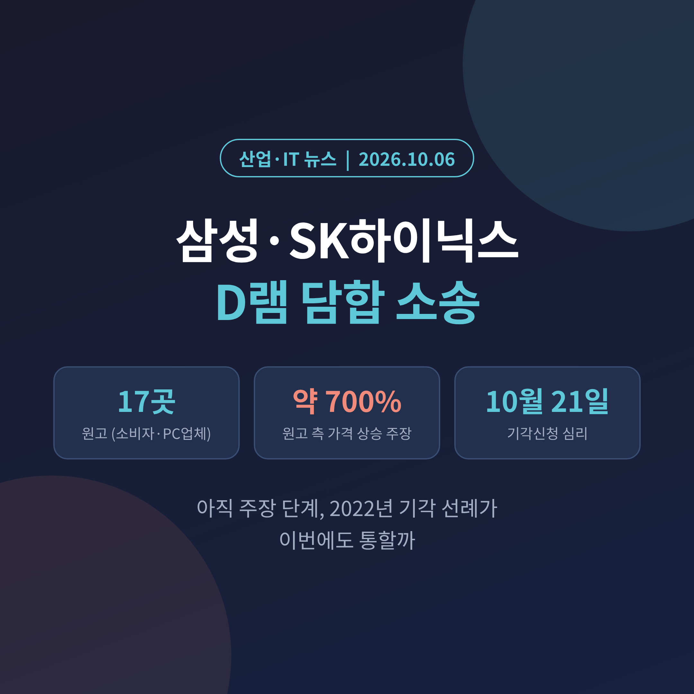
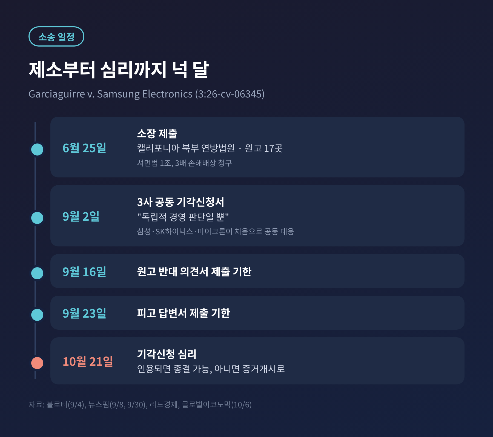
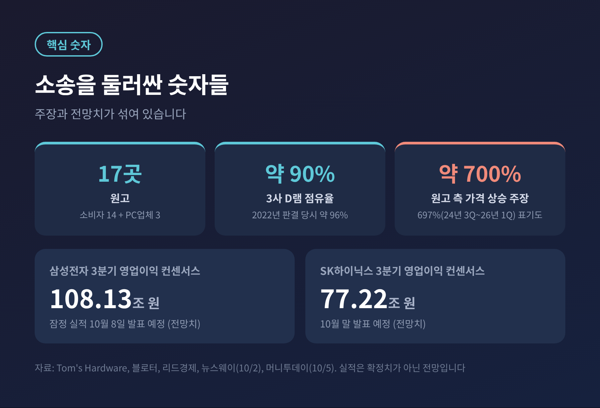
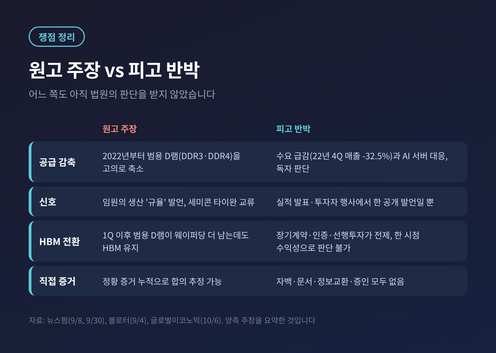
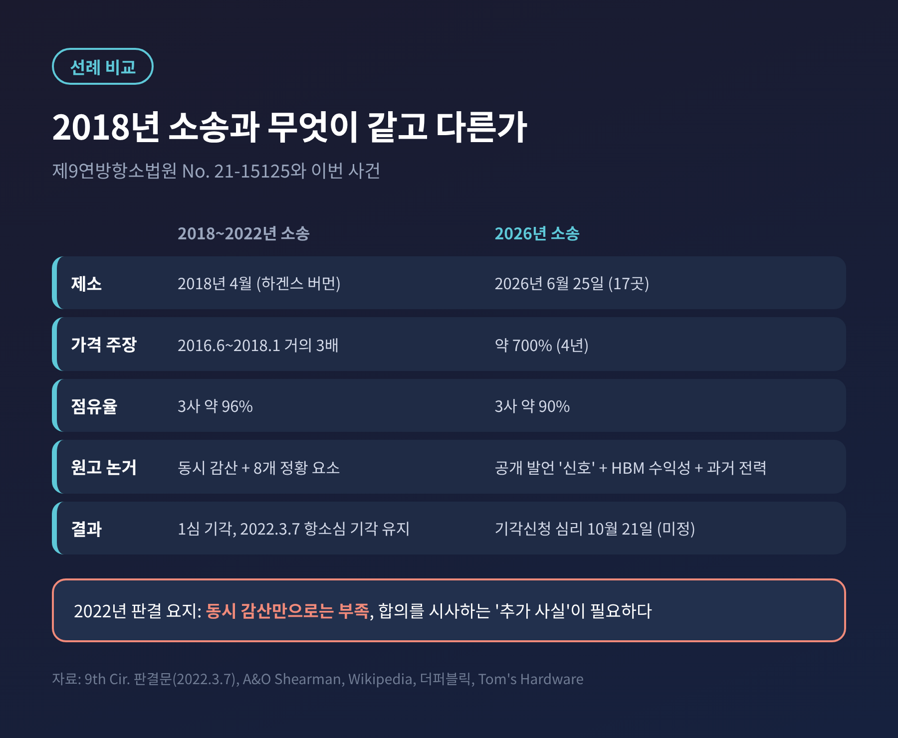
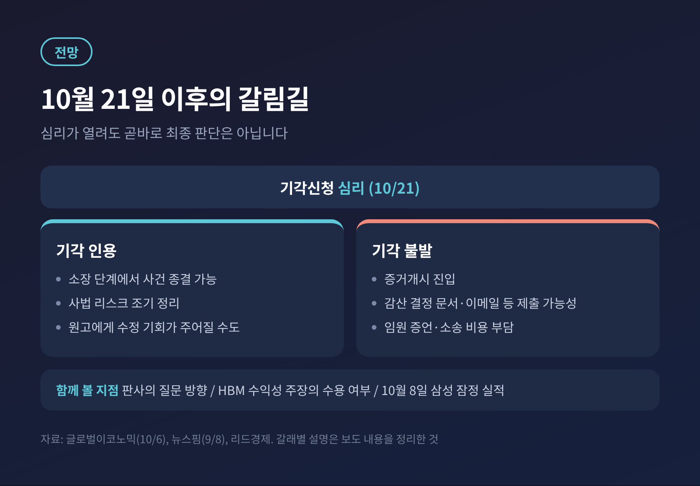

AI 때문에 메모리가 귀해진 틈에 삼성전자와 SK하이닉스가 미국에서 가격 담합 소송을 받고 있습니다. 이번 글에서는 소송이 어떤 구조인지, 무엇이 쟁점인지, 그리고 2022년 기각 선례가 이번에도 통할지를 정리해 보겠습니다.
소송은 아직 원고의 주장 단계이며, 세 회사는 혐의를 부인하고 있습니다.
3줄 요약
미국 소비자 14명과 소규모 PC 업체 3곳이 6월 25일 삼성전자·SK하이닉스·마이크론을 캘리포니아 북부 연방법원에 제소했습니다. 2022년부터 범용 D램 공급을 줄여 가격을 약 700% 올렸다는 주장입니다.
세 회사는 9월 2일 공동 기각신청서를 냈고, 법원은 10월 21일 심리를 엽니다. 기각 여부가 사건의 분수령입니다.
2022년 제9연방항소법원은 비슷한 소송을 소장 단계에서 걸러냈습니다. 다만 이번에는 가격 상승폭과 AI 수요라는 변수가 다릅니다.
사건명은 Garciaguirre v. Samsung Electronics(사건번호 3:26-cv-06345)입니다. 원고는 소비자 14명과 소규모 PC 업체 3곳, 모두 17곳입니다. 세 피고는 전 세계 D램 시장의 약 90%를 차지합니다.
원고의 논리는 이렇습니다. 세 회사가 2022년부터 구형 범용 D램(DDR3·DDR4) 공급을 일부러 줄였고, 그 명분이 HBM(AI 가속기용 고대역폭메모리) 투자였다는 것입니다. 청구 근거는 셔먼법 1조이고, 3배 손해배상과 공급 제한 금지명령을 요구합니다.
삼성전자는 중앙데일리에 "소장의 주장은 사실무근"이라고 밝혔고, SK하이닉스는 소장을 검토한 뒤 대응하겠다고 했습니다. 이후 9월 2일 세 회사가 처음으로 공동 기각신청서를 냈습니다. 원고 의견서는 9월 16일, 피고 답변서는 9월 23일까지가 제출 기한이었고, 10월 21일 심리가 열립니다.

첫째, 가격 문제입니다. 소장은 범용 D램 계약가격이 4년간 약 700% 올랐다고 적었습니다. 블로터와 리드경제는 2024년 3분기부터 2026년 1분기까지 697%라는 표현으로 전했습니다. 기간 표기가 매체마다 다르니 소장 원문 확인이 필요합니다.
원고는 애플 맥·아이패드 가격 인상을 피해 사례로 들었습니다. 테크타임스에 따르면 맥미니는 2024년 10월 599달러에서 2026년 8월 M6 모델 899달러가 됐습니다. 다만 이것이 담합 때문인지 수요 때문인지는 법정에서 가릴 일입니다.
둘째, 한국 업계의 실적입니다. 삼성전자의 3분기 영업이익 컨센서스는 108.13조 원, SK하이닉스는 77.22조 원입니다. 합치면 185조 원이 넘는 전망입니다. 이 호황의 원인을 놓고 '시장의 힘'인지 '공급 조절'인지를 따지는 재판이 열린 셈입니다.
셋째, 시점입니다. 트렌드포스는 4분기 범용 D램 계약가가 전분기 대비 10~15% 더 오를 것으로 봤습니다. 상승세가 완만해진다고는 해도, 공급 부족이 2027년까지 이어질 것이라는 시각이 많습니다.

셔먼법 1조를 입증하려면 가격이 함께 오르거나 생산을 동시에 줄였다는 사실만으로는 부족합니다. 경쟁사끼리 합의했다는 근거가 있어야 합니다. 법원은 이를 '병행 행위(parallel conduct)'와 '공모'의 구분이라 부릅니다.
피고는 직접 증거가 없다고 맞섭니다. 임직원의 자백도, 이른바 스모킹 건 문서도, 경쟁사 간 비공개 정보 교환도, 비밀 증인도 없다는 것입니다. 원고가 신호로 든 16개 문단은 실적 발표와 투자자 콘퍼런스에서 공개적으로 한 말일 뿐이라는 입장입니다. 뉴스핌 보도에 따른 내용입니다.
원고 쪽은 임원들의 생산 '규율' 발언, 세미콘 타이완 같은 업계 행사 교류, 2022~2024년 감산 흐름을 정황으로 듭니다. 여기에 새 논거가 하나 더 붙었습니다. 올해 1분기 이후 범용 D램의 웨이퍼당 수익성이 HBM을 넘어섰는데도 세 회사가 HBM 중심 생산을 이어갔다는 주장입니다.
피고는 HBM이 장기 고객계약과 제품 인증, 선행 설비투자를 전제로 하기에 한 시점의 수익성만으로 판단할 수 없다고 반박합니다. 같은 웨이퍼에서 범용 D램이 약 3배 더 나온다는 원고의 계산도, 이 반박도 아직 법원이 판단한 것은 아닙니다.

예전엔 2000년대 초 실제 담합이 있었고, 지금은 그 기억이 소송의 배경이 됩니다. 2005년 하이닉스가 1억 8,500만 달러, 삼성이 3억 달러 벌금을 내며 유죄를 인정했습니다. 당시에는 이메일 같은 증거가 있었다고 더퍼블릭은 전합니다. 마이크론은 자진신고로 처벌을 피했습니다.
이번 소장도 이 전력을 정황으로 인용합니다. 그런데 2018년 하겐스 버먼이 낸 집단소송은 달랐습니다. 2016~2018년 D램 가격이 거의 세 배 올랐다는 주장이었지만, 1심에 이어 2022년 3월 7일 제9연방항소법원이 기각을 유지했습니다.
판결문은 동시 감산이 '합법적이고 안무되지 않은 자유시장 행동으로 더 그럴듯하게 설명된다'고 봤습니다. 과거 유죄 전력만으로는 담합을 겨우 약하게 시사할 뿐이라는 취지도 담겼습니다. 증거개시의 문을 쉽게 열어서는 안 된다는 경계도 있었습니다.
피고가 이번에도 이 선례를 앞세우는 이유입니다. 그렇다고 결과가 같으리라고 단정할 수는 없습니다. 이번에는 가격 상승폭이 훨씬 크게 주장되고, 원고가 공개 발언과 HBM 수익성이라는 새 주장을 가져왔기 때문입니다. 반대로 AI 서버 수요라는 강력한 대체 설명도 피고에게 있습니다.

기각 신청이 받아들여지면 사법 리스크가 일찍 정리됩니다. 받아들여지지 않으면 증거개시로 넘어갑니다. 감산 결정 문서, 설비투자 회의 메모, 이메일, 웨이퍼 투입량과 생산능력 배분 계획이 공개 대상이 될 수 있습니다. 소송 비용과 임원 증언 부담도 따릅니다.
기각 심리가 열려도 곧바로 최종 판단이 나오는 것은 아닙니다. 법원이 일부만 받아들이거나, 원고에게 소장을 고칠 기회를 줄 수도 있습니다. 제프리스는 이 소송이 올해 말까지 메모리 가격에 영향을 주지 않을 것으로 봤습니다.
지켜볼 대목은 세 가지입니다. 10월 21일 심리에서 판사가 어떤 질문을 던지는지, 원고의 HBM 수익성 주장이 어디까지 받아들여지는지, 그리고 삼성전자가 10월 8일 내놓을 3분기 잠정 실적이 호황을 어떻게 보여주는지입니다.

정리하면 이렇습니다. 이 소송은 '가격이 올랐다'가 아니라 '합의가 있었는가'를 묻습니다. 고가격 시대의 책임을 법정에서 가려보려는 시도이고, 법원은 증거 없는 의심에 엄격해 왔습니다.
"가격이 함께 올랐다는 사실과, 함께 올리기로 했다는 증거는 다른 문제입니다."
호황의 한복판에서 열리는 재판이 끝내 어디로 향할지는, 10월 21일의 질문들이 먼저 보여줄 것입니다.